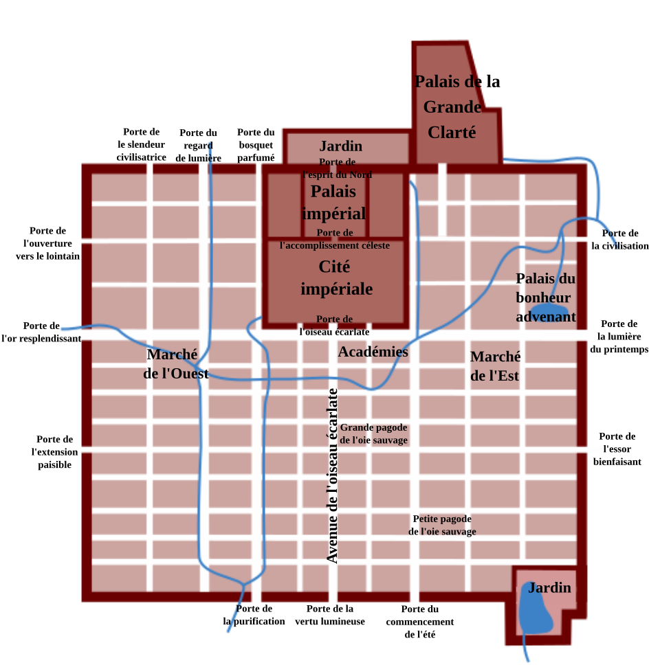

时间轴浏览
按年份、日期或小时查看事件与人物位置，快速跳转到真实发生的时间点。
ChronosMap 是一款面向 iPhone、iPad 和 Mac 的时间地图应用。它把人物、事件、地点和轨迹放在同一张地图与时间轴中，帮助你从空间和时间两个维度理解故事。
ChronosMap 支持打开示例地图、导入地图包、编辑自己的地图，并通过时间轴、地理透镜和热力层观察数据。
按年份、日期或小时查看事件与人物位置，快速跳转到真实发生的时间点。
在地图上选定一个范围，查看此地发生过的事件和人物轨迹点。
创建自己的地图，添加人物、事件、轨迹点和图片，保存为 ChronosMap 地图文件。
导入旅行或日常照片，ChronosMap 会读取照片中的拍摄时间和地理位置，为你自动创建个人轨迹点。
选择带有位置信息的照片，应用会按照片真实经纬度和拍摄时间建立轨迹点。每张照片都可以成为旅程中的一个记忆节点，适合整理旅行、城市漫步、考察路线或个人年表。
应用内置“中国唐朝”示例地图，展示人物、事件和轨迹如何围绕地点与时间组织起来。你也可以从空白地图开始创作自己的数据。
